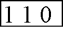
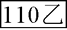
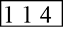

關於我們 |
|||||
緣 起 |
目 的 |
聯絡方式 |
相關連結 |
||
| 聯絡方式 |
| TEL：02-2679-4043 02-2670-3947 |
| E-MAIL：lin701769@yahoo.com.tw |
| 地址：新北市鶯歌區建國路576號 |
| 交通指引 |
| 國道 |
| ：下(三峽鶯歌)交流道往鶯歌方向前進→三鶯大橋→文化路→左轉建國路 |
| ：下(八德鶯歌)交流道往鶯歌方向前進→福德一路→右轉鶯桃路→右轉建國路(中油鶯桃站路口)約莫兩百公尺 |
| 一般道路： |
樹林往鶯歌方向：中正一路→中山路→左轉國華路→右轉永明街→左轉鶯桃路→右轉建國路(中油鶯桃站路口)約莫兩百公尺 桃園、三峽同國道下交流道後之路線 |